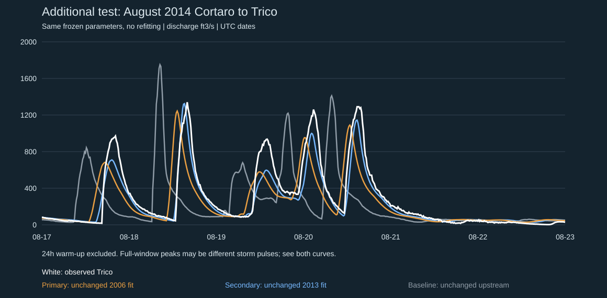

FLOODplain / Additional event test
Do the frozen models transfer?
August 2014 event, not used to fit either model. The September result and frozen parameters are unchanged.

Observed sampled peak: 1340 ft3/s at 2014-08-18T23:00:00.000Z. Negative timing error is early. With multiple pulses, the model's largest pulse may differ from the observed largest pulse, so this is not necessarily a travel-time error.
| Model | Peak ft3/s | Peak error | Peak timing | RMSE ft3/s | NSE |
|---|---|---|---|---|---|
| Primary: unchanged 2006 fit | 1244 | -7.2% | -165 min | 231 | 0.545 |
| Secondary: unchanged 2013 fit | 1325 | -1.2% | -45 min | 112 | 0.893 |
| Baseline: unchanged upstream | 1750 | 30.6% | -450 min | 453 | -0.746 |
577 matched approved unqualified points; 24h warm-up removed. NSE below zero means worse squared error than using the observed event mean as a constant retrospective reference, not a live forecast baseline.
Additional event selected from highest Cortaro daily mean in August 2014 (August 19), before evaluating it with frozen models. Not used in fitting. Chosen after viewing September benchmark, so not a blinded evaluation program.
Download curves, scores and provenance | Original September benchmark | Terrain lab and source status
Browser visual QA remains unperformed. No production or alert integration.